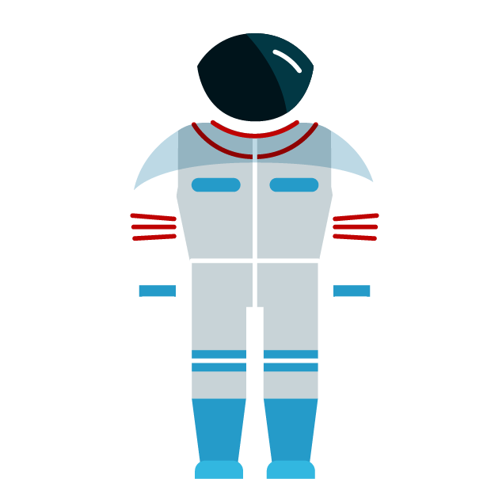

NASA'S MISSION:
About NASA
The National Aeronautics and Space Administration (NASA) is an independent agency of the United States Federal Government responsible for the civilian space program, as well as aeronautics and space research.
NASA was established in 1958, succeeding the National Advisory Committee for Aeronautics (NACA). The new agency was to have a distinctly civilian orientation, encouraging peaceful applications in space science.[8][9][10] Since its establishment, most US space exploration efforts have been led by NASA, including the Apollo Moon landing missions, the Skylab space station, and later the Space Shuttle. Source: Wikipedia
Live Data
ISS Current Location
ISS Pass Times

People In Space